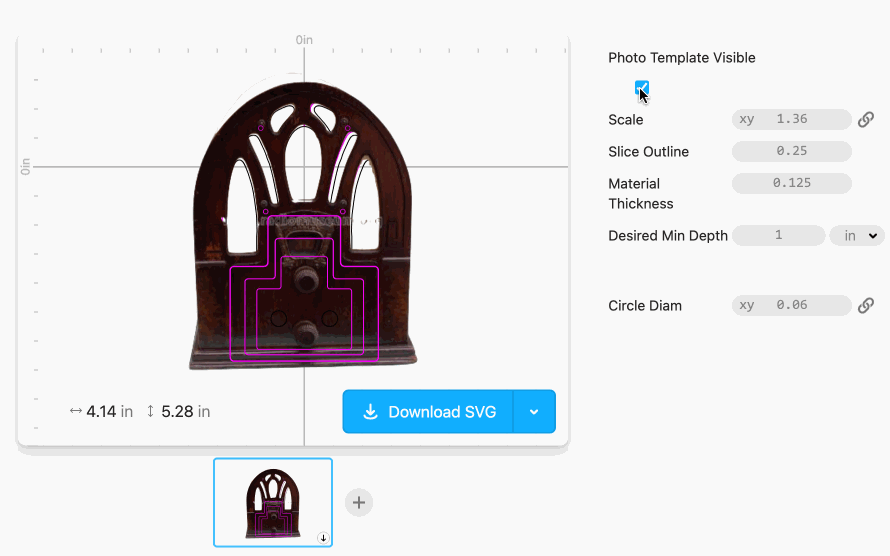
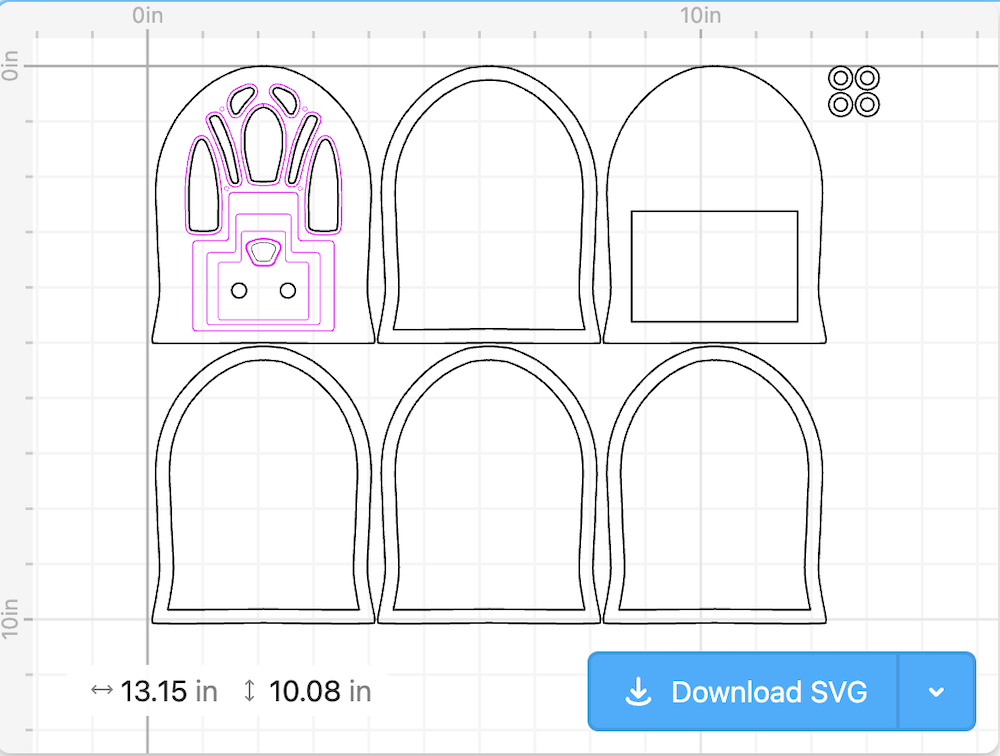

Yesterday’s static, today: A Bluetooth speaker for the vintage listener
Here’s the project write-up for a little cathedral speaker I made as a gift earlier this year.
TODO-photo
What?
TODO-video
A Bluetooth speaker in a housing modeled off a vintage Cathedral radio, with one knob for adjusting volume and another for adjusting “vintage-ness”—the amount of static and filtering applied to the audio. The higher the vintage-ness, the lower the audio fidelity!1
Why?
My partner frequently listens to baseball game radio broadcasts, instead of watching televised games. Given the long history of radio and baseball broadcasts, I thought it would be fun to add a vintage flavor to her experience by building a “vintage” Bluetooth speaker for listening to hometown games in low-fi style.
How?
Enclosure
I modeled the speaker’s wooden housing on a Crosley 179 “Dual Four” Cathedral radio from 1934: in parametric CAD program cuttle.xyz I traced the main outline and cutouts from a photo of the Crosley, then rearranged the knob positions, and added simplified decoration to the faceplate.

I scaled it down to just big enough to fit the electronics.

I cut the pieces from 1/8” plywood using the laser cutter at my public library’s maker space.2
I finished the wood with a basic stain and glued the layers together; the wood knobs were glued directly onto their respective potentiometers. The speaker fabric was roughly four inches of a perfect ribbon I found at my local second-hand art supply store. Seriously, they could not have had a more perfect option. I glued that on, too.
My Cuttle design is here, if you want to cut your own.
Hardware
I used this Adafruit tutorial by the Ruiz Brothers and Liz Clark as a starting point for the component selection and assembly, as well as the starting code approach.3 As in the tutorial, my build starts with an Adafruit ESP32 Feather as its microcontroller, and adds a couple of rotary potentiometers and a speaker.
Here it is all wired up:
TODO-photos/schema?
Software
The radio is programmed in C++, and relies on the Arduino Audio Tools and ESP32-A2DP (audio over Bluetooth) libraries written by Phil Schatzmann. The processing chain is roughly:
- The audio input is via a Bluetooth connection, which connects as does any other commercial headphones or speakers
- A 2 kHz low pass filter is applied, and white noise is added
- The processed stream is mixed with the original dry stream, with a ratio determined by the “vintage” knob: when set to 0, the output signal is entirely dry; when set to max, the output signal is the wet signal
- Output is amplified based on value of the “volume” potentiometer knob
- Output is sent to the speaker
The code is here.4 My implementation ended up being slightly convoluted (read: hacky), due to my lack of familiarity with the processing library and the tricky conditions under which I was attempting to debug.5 I ran out of time to add the notch filter I wanted, and clean things up a bit.
Next steps
For me, for now? None! I thought that I might continue to futz with it to get the processing how I wanted, but after I handed it over it turns out I was done. It works, it works mostly as designed, and it is usable without my intervention. Good enough for giftable work!
If I wanted to improve on the speaker or build something similar in the future, I’d definitely figure out what was going on in my code and make it nicer. I might also switch over to a different board and programming ecosystem—after the fact, a friend recommended using a Teensy, which apparently has a whole GUI system for easily setting up exactly the processing chain I’d wanted. Fun for the future!
If you want to make one, go for it! Typical caveat applies: in true houseplant programming form, I have not cleaned it up into a tutorial—what you see is what I wrote is what you get:
-
The Cuttle.xyz CAD project for making the housing is HERE
-
The repo where I documented my hardware set-up and saved my code is HERE
If you make one, let me know!
Thanks to the Ruiz Brothers and Liz Clark for their Adafruit tutorial and to Phil Schatzmann for the Arduino libraries.
Footnotes
-
In the interest of full disclosure, this is not the first audio ✨dehancement✨ project I’ve worked on. During my time as a DSP engineer at iZotope, one of the projects my team shipped was the 15 year re-release of their original Vinyl plugin, which adds a record player effect to input audio.
The current iteration of Vinyl (which you can get here!) has a modern UI, but back when my team worked on it it still had its original look and feel, complete with Easter egg credits:
↩︎ -
Thanks, staff at the Cambridge Public Library’s Hive! Thanks, taxpayers of the greater Camberville area!↩︎
-
Well, it was more like “I used that tutorial as an ending point,” after attempting various other more complicated set-ups first…↩︎
-
If you use it you have to promise to squint at it instead of read it head-on, as the aforementioned deadline lead to a quality that I don’t really stand behind. It sounds like I wanted it to sound, which is I think mostly accidental, and I’m not convinced that the filter is actually doing anything. But also, after I handed it over, I did not then go back to clean it up to be what I’d envisioned, as I thought I might! A true houseplant program.↩︎
-
Read: on a moving train, with the giftee sitting next to me such that I couldn’t try out my code changes live without giving up the surprise, on the day the gift was due! After this project, I’m declaring a temporary moratorium on builds with any holiday gifting deadlines. The wow factor is not worth the stress of impending deadlines.
“But Hannah,” you may be saying to yourself, or to me if you’re feeling rude(!), “why didn’t you :just-flag: complete this project sooner?”
Luckily for us both, this is question I am far too genteel to dignify with a response.↩︎
- Created: 2026-07-07
- Type: Project write-up
- Tags: baseball-radio, dsp, once-more-with-less-fidelity, hardware, audio